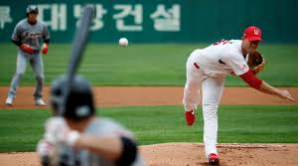
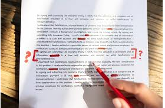

I hit my first home run in 7th grade at the coaches field. That was a big moment because after that I really started to become interested in baseball, and now I am on the highscool tema and want to play for as long as I can. I also play basketball and football.
My best academic accomplishment was finishing the I-Search. This was very long and hard but it felt great after I had finished the towering 23 page essay.
Some of My academic interests include getting all A’s throughout highschool, excelling at math and science, getting into a good college, and maintaining and above 4.0 GPA
I am very interested for APCSP next year as I am going to be able to continue my academic career ini computers and hopefully add onto the existing knowledge I have